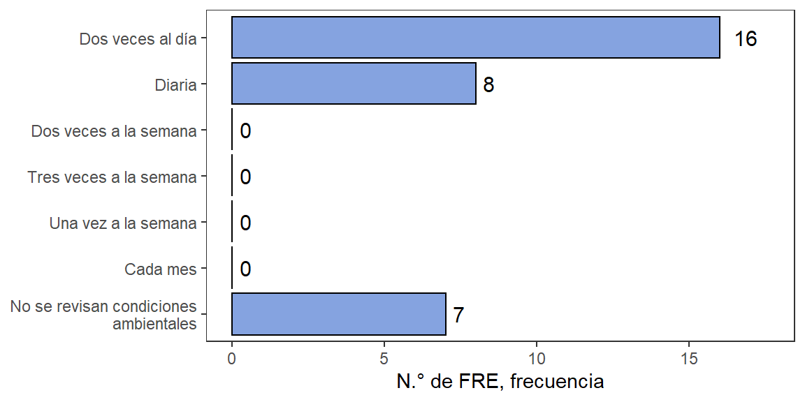
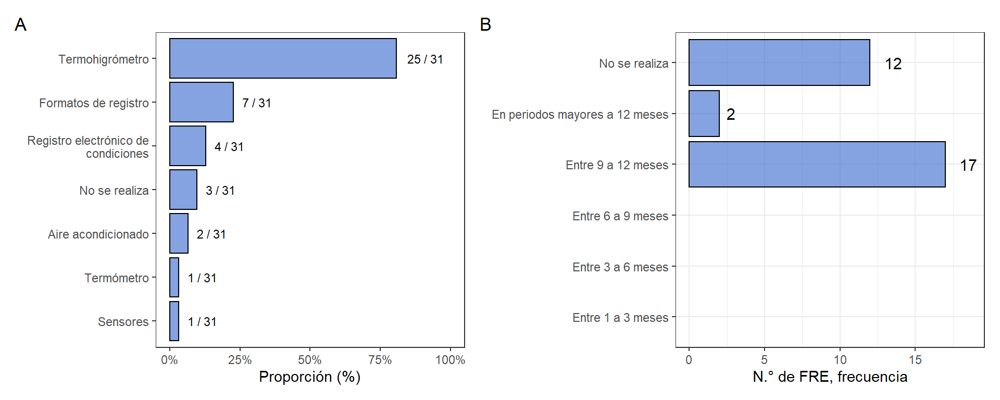
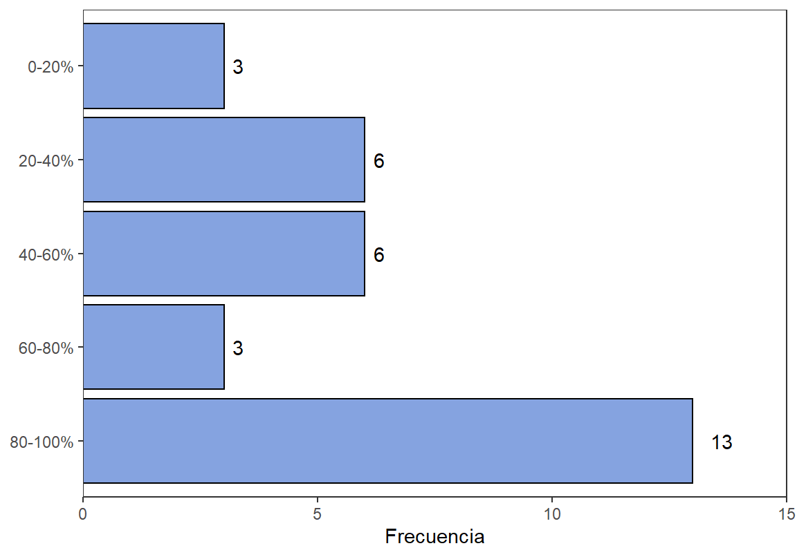
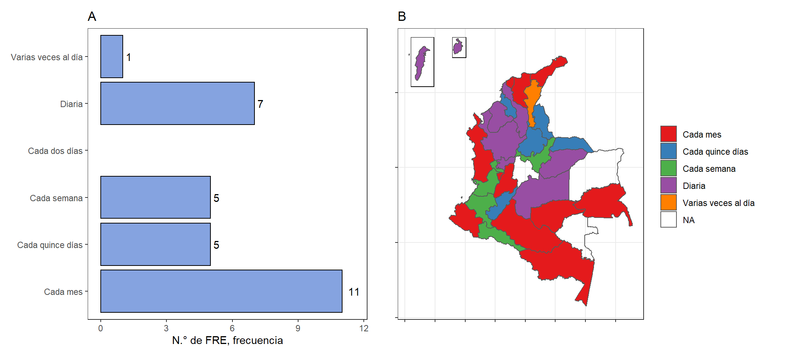

6.3 Almacenamiento
6.3.1 Medidas de seguridad para el almacenamiento
En la Figura 6.16 se listan las medidas de seguridad adoptadas por los FRE para disminuir la posibilidad de robo con fines de desvío de los MME. Las medidas más adoptadas por parte de los FRE consisten en (i) el acceso de seguridad restringido a cierto personal (con respuesta afirmativa por parte de 18 de 26 FRE), seguido de (ii) gabinetes con llaves simple (en 14 de 26 FRE), (iii) almacenamiento en oficina privada (14 de 26 FRE responden que lo aplican), (iv) inventarios físicos diarios, y (v) protección en gabinetes hechos de materiales resistentes.
Figura 6.16: Medidas de seguridad en el almacenamiento de MME

El departamento que reporta la mayor cantidad de medidas de seguridad es César con 7 medidas como: (i) acceso de seguridad restringido a cierto personal, (ii) procedimientos para el manejo de personal huésped, (iii) visitantes, (iv) mantenimiento o no empleados del FRE, (v) almacenamiento en oficina privada, (vi) inventario físico diario, y (vii) Disponibilidad local de protección policial. Entre los FRE con mayor número de medidas de seguridad reportadas se tiene Casanare (con 6 medidas reportadas), y Córdoba, Antioquia, Norte de Santander, Valle del Cauca, Guaviare y Risaralda con 5 medidas reportadas. Los FRE de Atlántico, Magdalena, Huila, Quindío, y Amazonas sólo reportan una medida de seguridad.
Sólo los FRE de Valle del Cauca y Córdoba reportan la existencia de un sistema de monitoreo por cámaras para los medicamentos. Sólo los FRE de Córdoba y Vichada reportan la presencia de seguridad privada como medida de seguridad para los FRE. Se recomienda la adopción de una o varias medidas de seguridad por parte de los FRE frente a posibles robos con intenciones de desvío o tráfico de medicamentos MME.
6.3.2 Revisión de condiciones ambientales
En la Figura 6.17 se muestra la frecuencia de revisión de condiciones ambientales en el almacenamiento de MME. Se tienen que la práctica más frecuente en los FRE es la realización de verificación de condiciones ambientales por lo menos dos veces al día. Sólo algunos FRE afirman que no hacen revisión de condiciones ambientales como Bolívar, Sucre, Chocó, Norte de Santander, Amazonas y Vichada.
Figura 6.17: Frecuencia de revisión de condiciones ambientales
En el panel izquierdo de la Figura 6.18 se presentan los métodos o tecnologías utilizadas en la monitorización de los medicamentos. En la Figura 6.18 se observa que al menos 25 de 30 fondos rotatorios cuentan con un termohigrómetro para la evaluación de condiciones ambientales. La práctica de diligenciar registros cuenta con una menor adopción por parte de los fondos rotatorios, se tiene que 7 y 4 de los fondos rotatorios realiza el diligenciamiento de estos formatos de manera manual y electrónica de manera respectiva.
Figura 6.18: (A) Tecnologías de control y seguimiento de condiciones ambientales y (B) Frecuencia de calibración y mantenimiento de equipos de seguimiento ambiental
En sólo dos FRE (Chocó y Norte de Santander) se reporta el uso de aire acondicionado como una medida para el seguimiento de condiciones ambientales. En el panel derecho de la Figura 6.18 se tiene que la práctica más común es realizar la calibración de los equipos de monitoreo por lo menos una vez al año, y hasta en 11 se tiene que no hay un procedimiento de calibración de los equipos. La mayoría de departamentos que no realizan el proceso de calibración se encuentran en la región central.
6.3.3 Espacio de almacenamiento
En la Figura 6.19 se muestra la frecuencia de varias categorías de productos con los cuales se comparten los MME en el almacén de los FRE. Se tiene que en casi la mitad de los FRE se comparten los MME con medicamentos de salud pública, en 7 de 30 casos se reporta la utilización del espacio en conjunto con papelería (7/30) o recetarios oficiales (3/30). Algunos FRE tienen otros items como vacunas, medicamentos de carros de paro y medicamentos incautados. En 9 de 30 casos se tiene que el FRE tiene un espacio dedicado únicamente a MME.
Figura 6.19: Productos compartidos en el almacén de MME

En la Figura 6.20 se tiene una estimación del promedio de ocupación de medicamentos MME en los almacenes frente a otros productos. Se tiene que la práctica más común es la utilización de un espacio destinado exclusivo para estos medicamentos y esto se da en 12 FREs.
Figura 6.20: Ocupación promedio del MME frente a otros medicamentos o ítems almacenados en el FRE
Se considera que existen dos tipos de métodos de control de inventario conocidos como sistemas perpetuos o periódicos6. En la Figura 6.21 se tiene una caracterización de la frecuencia de control de existencias de los MME. En la mayoría de los FRE se realiza esta verificación de manera mensual, o de forma diaria. La frecuencia de monitoreo de existencias parece estar relacionada con el nivel medio de inventario.
Figura 6.21: Frecuencia del control de existencias de medicamentos MME
Entre los FRE que afirman realizar el monitoreo de niveles de inventarios de forma diaria se encuentran Antioquia, Córdoba, Bolívar, San Andrés, Casanare, Meta y Caldas. El FRE de Cesar afirma realizar el control de existencias varias veces al día. Los FRE que realizan monitoreo cada mes parecen encontrarse en las regiones más periféricas del territorio, y esto se podría deber a la presencia de niveles de inventario promedio bajos.
6.3.4 Control de fechas de vencimiento
De acuerdo a la Resolución 1403 de 2007 del MSPS7, el control de fechas de vencimiento es un procedimiento importante enmarcado en el proceso de Recepción y Almacenamiento de Medicamentos y Dispositivos Médicos dentro del Modelo de Gestión del Servicio Farmacéutico. Los servicios farmacéuticos deben contar con criterios procedimientos y recursos que le permitan verificar y recursos que permitan verificar continuamente la fecha de vencimiento de los medicamentos7.
Entre estos recursos se encuentra la semaforización, que es una herramienta que permite identificar y determinar en el momento oportuno que medicamentos están próximos a vencer. De forma común, esta herramienta se aplica mediante la rotulación de las unidades con colores de los medicamentos de acuerdo al tiempo esperado hasta la fecha de vencimiento8. La semaforización también se podría aplicar mediante sistemas de alertas electrónica.
La adopción de esta práctica sólo se ha realizado en 40% de los FRE. Esta práctica se lleva a cabo teniendo en cuenta tres colores:
- Rojo: medicamento que se encuentra próximo a vencer.
- Amarillo: medicamento que se encuentra en riesgo moderado de vencimiento.
- Verde: medicamento que no tiene riesgo de vencimiento. En ocasiones, no se genera ningún tipo de alerta cuando el producto está en esta condición.
Los umbrales adoptados por la mayoría de las entidades ha sido 6|12 que indica colocar una etiqueta roja sí el medicamento se encuentra a 6 meses de vencerse, y una etiqueta amarilla sí el medicamento se encuentra a 12 meses de vencerse. Algunos FRE también tienen umbrales de 3|6 meses para el proceso de semaforización.
Figura 6.22: Presentación de casos de vencimiento de MME

Figura 6.23: Medicamentos implicados en casos de vencimiento de MME

6.3.5 Transporte
El transporte de medicamentos por parte del FNE, es un proceso importante dentro de la cadena de suministro de MME. Los costos de transporte de medicamentos por parte del FNE están cubiertos dentro del precio de los MME. El FNE contrata a una empresa especializada en distribución logística de mercancías y bienes para la entrega del producto a nivel nacional.
En la Figura 6.24 se tiene una descripción de la opinión del servicio de distribución por parte del FNE. Se tiene que las opiniones se encuentran divididas con algunas respuestas positivas (66.6%) y otras negativas (33.3%).
Figura 6.24: Opinión del servicio de la distribución de los medicamentos MME

En cuanto a las opiniones negativas se tiene como principal queja a las averías en los productos causadas por el transporte. Se tienen también quejas relacionadas con (i) problemas en el enrutamiento de los envíos, (ii) demoras, (iii) disposición de los medicamentos en la entrada de las secretarías sin entregarlos de forma directa a los encargados, (iv) falta de cobertura en todo el territorio y (v) condiciones de almacenamiento inadecuadas.
“Problemas de embalaje y muchos problemas de averías”
Los problemas en el transporte de medicamentos han generado inconvenientes relacionados a sobrecostos en este mismo rubro, de manera que algunos FRE han tenido que recurrir a otros convenios, por ejemplo como aquellos utilizados por medicamentos de salud pública.
En cuanto a las respuestas positivas se tiene que la mayoría de los FRE que responden de esta manera no han tenido inconvenientes con la entrega de los productos. Algunos de estos FRE manifiestan que la empresa hace llegar el producto dentro de 5 días después del despacho, así mismo que los medicamentos llegan en buenas condiciones y que no se han tenido problemas. Sólo algunos de los FRE no tienen registros de inconvenientes con el transportador previamente. Un ejemplo de respuesta positiva ha sido:
“No hemos tenido inconvenientes con el transporte de MME. Cuando surge un caso de producto no conforme, el FNE siempre responde y efectúa la devolución de estos productos con averías.”
Se tiene que pese a que más del 50% de los respondientes de la encuesta tienen una opinión positiva del transporte de los medicamentos, casi 1 de cada 3 FRE no están satisfechos con el servicio. El alto grado de insatisfacción y las causas que justifican la opinión se deben tener en cuenta como aspectos para el mejoramiento del proceso.